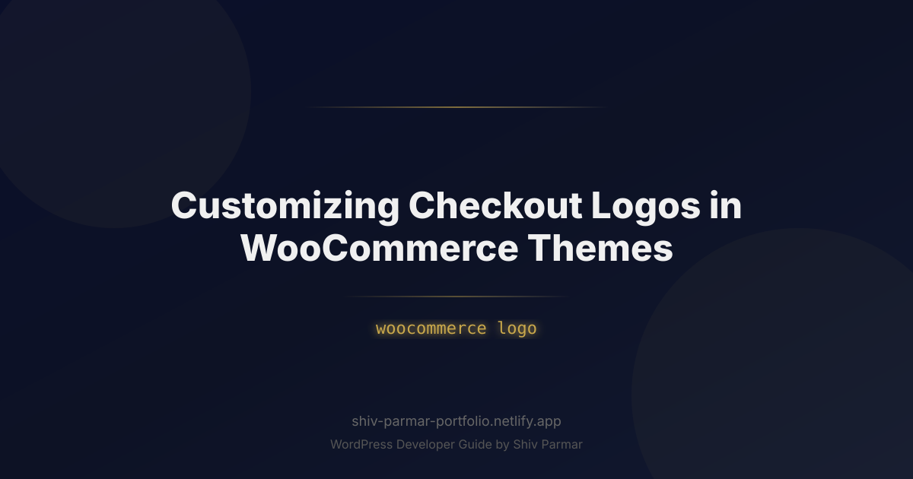

Customizing Checkout Logos in WooCommerce Themes
Table of Contents
The checkout page is the most financially critical touchpoint in any digital store, yet it is often where brand consistency abruptly falls apart. After browsing an impeccably curated storefront, an eager customer adds an item to their cart, clicks through to finalize payment, and suddenly encounters an unstyled, oversized, or awkwardly aligned header logo that looks completely detached from the rest of the site. In digital commerce, visual inconsistency breeds hesitation, and hesitation at checkout translates directly into abandoned carts.
Studies consistently show that global cart abandonment rates hover around 70 percent. While unexpected shipping fees and forced account creation rank high among the causes, a subtle yet pervasive factor is friction in brand trust. When a user transitions to a payment interface, they look for visual validation that their transaction is secure, official, and legitimate. Customizing your woocommerce logo on the checkout page—whether that means implementing a distraction-free minimalist variant, resizing an asset for mobile viewports, or pairing your mark with security credentials—provides an immediate trust signal that reassures buyers right before they hit "Place Order."
This technical guide will walk you through everything you need to know about tailoring checkout logos in WooCommerce themes. From using the modern Block Editor and full-site editing (FSE) to implementing conditional PHP hooks and targeted CSS in classic WordPress setups, you will master the exact techniques required to build a polished, high-converting checkout header.
What is Checkout Logo Customization in WooCommerce?
Checkout logo customization in WooCommerce refers to the practice of modifying, replacing, or restyling the site logo exclusively on the checkout page (and often the order confirmation/thank-you page), separating its presentation from the standard sitewide header.
In a standard WordPress installation running WooCommerce, your theme applies a global header across every template. This global header typically renders the site logo alongside the primary navigation menu, a live search bar, social icons, and a cart drawer trigger. While this setup works brilliantly for discovery pages like your catalog, category archives, and individual product listings, it is detrimental on the checkout page.
When customizing the checkout logo, store owners and developers generally aim to achieve one or more of the following configurations:
- Distraction-Free "Enclosed" Checkout: Removing all main navigation links and utility icons, leaving only a centered, clean brand logo that prevents users from navigating away from the purchase funnel.
- Dedicated Checkout Asset: Replacing a horizontal, text-heavy logo with an icon-focused mark or an alternative variation that includes an embedded security badge (e.g., "Brand Name | Secure Checkout").
- Context-Sensitive Sizing and Layout: Scaling the logo specifically to fit within a compact two-column checkout template without consuming precious vertical space on mobile devices.
- Dynamic Payment-Specific Logos: Showing distinct co-branded partner logos or compliance seals based on the user's selected gateway or geography.
Depending on whether your store runs on a modern block-based theme (such as Twenty Twenty-Four) or a classic PHP-based theme (such as Astra, GeneratePress, or Storefront), the mechanism for executing these modifications varies between block template editing, customizer settings, and child theme code snippets.
Why Customizing Checkout Logos Matters in 2026
E-commerce interfaces in 2026 demand unprecedented speed, simplicity, and friction reduction. The rise of express mobile wallets—such as Apple Pay, Google Pay, and localized instant-debit solutions—has conditioned consumers to expect checkout flows that load instantly and display minimal clutter. The treatment of your checkout logo plays a foundational role in this environment for several reasons.
1. Frictionless CRO and Cognitive Load Reduction
Modern Conversion Rate Optimization (CRO) emphasizes the elimination of cognitive load during the final stages of the funnel. A traditional e-commerce header contains anywhere from five to twenty clickable links. If your logo is rendered inside that sprawling header, your checkout conversion rate suffers. By isolating the woocommerce logo inside a streamlined checkout header, you eliminate external exit paths while keeping your brand presence prominent and recognizable.
2. Responsive Economy on Mobile Viewports
More than 70% of e-commerce transactions now occur on handheld devices. A desktop-optimized logo that spans 300 pixels horizontally can push the initial form fields of a WooCommerce checkout page below the mobile fold. Customizing your logo for checkout allows you to deliver an optimized SVG or a vertically compressed asset, ensuring that customer input fields (like email and shipping address) remain visible immediately upon page load.
3. Security Reassurance and Trust Signaling
Fraud prevention and privacy concerns are top-of-mind for modern online shoppers. Merging your primary logo with an SSL trust mark or a "Verified Secure Checkout" lockup directly within the checkout header provides immediate psychological comfort. Shoppers do not want to guess whether they have been redirected to an insecure third-party frame; an intentional, secure-branded checkout header validates the authenticity of the transaction.
4. Unified Support for Core Web Vitals (LCP & CLS)
Google's Core Web Vitals heavily weigh Largest Contentful Paint (LCP) and Cumulative Layout Shift (CLS). The checkout page must execute scripts, compute taxes via AJAX, and dynamically load payment iframes. If the header logo is not hard-coded with explicit dimensions or is dynamically injected via bloated client-side scripts, the layout can jump, frustrating users and negatively impacting performance. Implementing clean, optimized checkout logo solutions prevents layout shifts and guarantees instant rendering.
Step-by-Step Guide: How to Customize Your WooCommerce Checkout Logo
Because WordPress and WooCommerce support multiple architectural frameworks, there is no single universal method for modifying the checkout logo. Below, we cover five distinct methods ranging from zero-code block editing to programmatic PHP hooks and CSS refinements.
Method 1: Customizing Logos in the Block-Based Checkout (Full Site Editing)
If your store uses a block-enabled theme and the WooCommerce Checkout Block (introduced as the default experience in recent WooCommerce releases), you can customize your checkout logo directly using the WordPress Site Editor without touching any code.
- Navigate to WordPress Admin > Appearance > Editor.
- Select Templates from the left sidebar and find the template assigned to your checkout page (often titled Page: Checkout or simply Checkout).
- If your checkout template inherits the global Header template part, click on the Header area.
- To isolate changes to the checkout page, click the three vertical dots on the Header block toolbar and select Detach blocks from template part. This allows you to edit the header layout exclusively for this page without altering the rest of your store.
- Remove any navigation menus, search bars, or cart icons surrounding the logo.
- Select the Site Logo block. In the block inspector panel on the right, you can:
- Adjust the logo width using the slider.
- Toggle the option to link the logo back to the home page (or disable the link to prevent users from exiting the checkout).
- Toggle "Use as site icon" or replace the image with a dedicated checkout-specific asset.
- Click Save to commit your changes.
Method 2: Using the Classic WordPress Customizer & Theme Settings
Many popular commercial themes designed for WooCommerce—such as Astra Pro, GeneratePress Premium, and OceanWP—feature built-in settings for an "Enclosed" or "Distraction-Free" checkout that automatically handles logo placement.
If you are using Astra, for instance:
- Go to Appearance > Customize.
- Navigate to WooCommerce > Checkout.
- Look for the Distraction Free Checkout toggle and enable it. This setting strips the navigation menus and sidebar widgets.
- To adjust the logo specifically, navigate to Header Builder > Site Title & Logo within the Customizer. Some themes provide a secondary upload field specifically for "Sticky Header Logo" or "Checkout Logo."
- If your theme lacks a dedicated checkout logo slot, leave the site logo enabled and proceed to Method 4 to adjust its dimensions and appearance via CSS.
Method 3: Replacing the Checkout Logo Programmatically with PHP
For custom theme development or when using a child theme, programmatically filtering the logo is the most robust and update-safe method. You can use WordPress and WooCommerce conditional tags to detect the checkout screen and replace the logo HTML or image source dynamically.
Open your child theme's functions.php file (or a custom site-specific plugin) and add the following snippet:
/**
* Replace the custom logo on the WooCommerce checkout page.
*
* @param string $html The existing logo HTML markup.
* @return string Modified logo HTML markup.
*/
function custom_woocommerce_checkout_logo( $html ) {
// Only execute on the WooCommerce checkout page, excluding the order received (thank you) page if desired
if ( function_exists( 'is_checkout' ) && is_checkout() && ! is_order_received_page() ) {
// Define your custom checkout logo URL (or get it from the media library)
$checkout_logo_url = 'https://example.com/wp-content/uploads/secure-checkout-logo.svg';
$site_name = get_bloginfo( 'name' );
$home_url = home_url( '/' );
// Build the optimized checkout logo markup
$html = sprintf(
'<a href="%1$s" class="custom-checkout-logo-link" rel="home" aria-label="%2$s">' .
'<img src="%3$s" class="custom-checkout-logo" alt="%2$s Secure Checkout" width="220" height="45" fetchpriority="high" />' .
'</a>',
esc_url( $home_url ),
esc_attr( $site_name ),
esc_url( $checkout_logo_url )
);
}
return $html;
}
add_filter( 'get_custom_logo', 'custom_woocommerce_checkout_logo', 20 );
This code intercepts the native WordPress get_custom_logo() call. When a user visits the checkout page, WordPress swaps the standard image URL with your specialized checkout asset while preserving semantic HTML, accessibility attributes, and high fetch priority for performance.
Method 4: Injecting a Dedicated Logo Above the Classic Checkout Form
If your theme bypasses the standard get_custom_logo() hook or you want to insert a centered logo directly into the body of the checkout page above the form fields, you can hook straight into WooCommerce's template hooks.
Add this snippet to your child theme's functions.php:
/**
* Inject a custom logo directly above the WooCommerce checkout form.
*/
function render_dedicated_checkout_logo() {
$logo_url = 'https://example.com/wp-content/uploads/brand-checkout-logo.svg';
$site_name = get_bloginfo( 'name' );
?>
<div class="woocommerce-checkout-brand-header">
<img
src="<?php echo esc_url( $logo_url ); ?>"
alt="<?php echo esc_attr( $site_name ); ?> Checkout"
class="checkout-brand-image"
width="200"
height="50"
/>
<span class="checkout-security-badge">
<svg xmlns="http://www.w3.org/2000/svg" width="16" height="16" viewBox="0 0 24 24" fill="none" stroke="currentColor" stroke-width="2" stroke-linecap="round" stroke-linejoin="round" aria-hidden="true">
<rect x="3" y="11" width="18" height="11" rx="2" ry="2"></rect>
<path d="M7 11V7a5 5 0 0 1 10 0v4"></path>
</svg>
256-Bit Encrypted Checkout
</span>
</div>
<?php
}
add_action( 'woocommerce_before_checkout_form', 'render_dedicated_checkout_logo', 5 );
This approach positions the logo directly above customer billing details, making it especially effective when you have hidden the primary site header entirely using CSS or a blank canvas template.
Method 5: Refining and Centering the Logo with Custom CSS
Once your logo is rendered, it must be styled to match the visual hierarchy of the checkout flow. Often, logos rendered on the checkout page look too large, sit awkwardly left-aligned, or lack sufficient breathing room.
To style the logo, navigate to Appearance > Customize > Additional CSS (or add this to your child theme's style.css file):
/* -------------------------------------------------------------
WooCommerce Checkout Logo & Header Polish
------------------------------------------------------------- */
/* Center the logo and introduce clean spacing on the checkout page */
.woocommerce-checkout .site-header .site-branding,
.woocommerce-checkout .woocommerce-checkout-brand-header {
display: flex;
flex-direction: column;
align-items: center;
justify-content: center;
padding-top: 2rem;
padding-bottom: 2rem;
margin: 0 auto;
text-align: center;
}
/* Constrain the logo image dimensions to prevent layout shifts */
.woocommerce-checkout .custom-checkout-logo,
.woocommerce-checkout .checkout-brand-image {
max-width: 220px;
height: auto;
display: block;
margin: 0 auto 0.75rem auto;
transition: opacity 0.2s ease-in-out;
}
/* Security badge styling underneath the checkout logo */
.woocommerce-checkout .checkout-security-badge {
display: inline-flex;
align-items: center;
gap: 6px;
font-size: 0.85rem;
font-weight: 500;
color: #4a5568;
letter-spacing: 0.02em;
}
.woocommerce-checkout .checkout-security-badge svg {
color: #38a169; /* Green trust indicator */
}
/* Responsive adjustments for mobile viewports */
@media (max-width: 768px) {
.woocommerce-checkout .site-header .site-branding,
.woocommerce-checkout .woocommerce-checkout-brand-header {
padding-top: 1.25rem;
padding-bottom: 1.25rem;
}
.woocommerce-checkout .custom-checkout-logo,
.woocommerce-checkout .checkout-brand-image {
max-width: 175px;
}
}
This CSS ensures that your checkout logo stays centered, scales proportionately on smartphones, and presents a crisp security badge directly beneath the artwork.
Best Practices for Checkout Logos
When customizing your checkout logo, visual aesthetics are only half the battle. You must balance visual appeal with site speed, technical compliance, and usability standards.
| Attribute | Recommended Specification | Impact on User Experience & CRO |
|---|---|---|
| File Format | Vector SVG or WebP | SVG guarantees crisp display on 4K/Retina screens with a negligible payload (under 10 KB). |
| Aspect Ratio | Horizontal (3:1 to 4:1) | Preserves vertical space, preventing the checkout inputs from sliding off-screen on mobile. |
| Maximum Width | 180px - 240px desktop; 140px - 170px mobile | Keeps the focus entirely on billing, shipping, and payment gateway inputs. |
| Explicit Dimensions | Always declare width and height |
Prevents Cumulative Layout Shift (CLS), improving Google Core Web Vitals scores. |
| Link Behavior | Optional or opens in new tab | Prevents accidental clicks that navigate shoppers away from an uncompleted transaction. |
Prioritize Vector SVGs with Inline Dimensions
Whenever possible, render your checkout logo as an SVG rather than a PNG or JPEG. SVGs scale infinitely without blurring on high-density displays, and they carry a fraction of the file size. However, always include explicit width and height attributes in your markup or CSS to avoid layout shifts while the SVG renders.
Carefully Consider the Logo Link
On catalog pages, clicking the site logo predictably returns visitors to the home page. On the checkout page, this behavior can be a liability. An accidental tap on a mobile device can navigate the buyer away, potentially resetting uncommitted form fields and causing cart abandonment. Consider one of these two alternatives:
- Unlinked Logo: Remove the anchor tag entirely, rendering the logo as a static image. The user stays focused solely on completing the form.
- Targeted Confirmation Modal: If the logo links to the home page, attach an event listener via JavaScript that prompts the user with a confirmation warning: "Are you sure you want to leave checkout? Your items are saved, but your progress will be paused."
Ensure Dark Mode and Contrast Compatibility
Modern mobile operating systems and browsers adapt dynamically to user preferences like dark mode. If your checkout page leverages dark mode styles, a dark-colored logo with a transparent background will vanish. Test your checkout logo across both light and dark themes, or use CSS media queries to swap the logo dynamically:
@media (prefers-color-scheme: dark) {
.woocommerce-checkout .custom-checkout-logo {
filter: brightness(0) invert(1);
}
}
Exempt the Checkout Logo from Lazy Loading
Many performance and caching plugins (such as WP Rocket, LiteSpeed Cache, or Autoptimize) automatically apply loading="lazy" to all images across a WordPress site. Because the checkout logo sits at the very top of the viewport, lazy loading it is bad practice—it delays the rendering of your primary above-the-fold asset and worsens your Largest Contentful Paint (LCP) metric. Add an exclusion in your caching plugin's settings for the checkout logo class (e.g., custom-checkout-logo) or include the attribute fetchpriority="high" directly in your image tag.
Common Mistakes to Avoid
Even seasoned WordPress developers can run into problems when modifying WooCommerce checkout templates. Keep an eye out for these frequent mistakes:
1. Editing Parent Theme Templates Directly
Modifying header.php or copying WooCommerce template files directly into your parent theme without a child theme is a recipe for disaster. The moment your theme issues an update, your custom checkout header will be wiped out. Always use a child theme, custom site-specific plugins, or WordPress action and filter hooks.
2. Over-Complicating with Heavy JavaScript Libraries
Avoid using heavy JavaScript or jQuery DOM manipulation (such as jQuery('.logo').replaceWith(...)) to change the checkout logo after the page loads. Client-side replacement introduces a visible flash of unstyled content (FOUC), slows down page rendering, and increases layout instability. Handle logo modifications on the server side using PHP filters or native block templates.
3. Forgetting the "Order Received" (Thank You) Page
The checkout journey does not end when the customer clicks "Submit." The is_checkout() conditional tag in WooCommerce returns true for both the active checkout form and the subsequent Order Received endpoint (is_order_received_page()). If you apply aggressive minimalist styles or strip headers, confirm that the thank-you screen still renders properly and provides an intuitive way for the customer to review their receipt or continue browsing.
4. Missing Accessibility (Alt Text and ARIA Roles)
When swapping logos programmatically, developers often forget to include standard accessibility markup. Omitting the alt attribute or leaving it empty prevents screen reader users from identifying the brand they are transacting with. Ensure your image tags always include descriptive, localization-ready alternative text, such as alt="Store Name - Secure Checkout".
5. Using High-Resolution Bitmaps Without Compression
Uploading an uncompressed 2 MB PNG file straight from a graphic designer to your media library will degrade your mobile checkout speed. If you must use a PNG rather than an SVG, run the asset through a lossless compression tool and serve it in next-generation formats like WebP or AVIF.
Conclusion
Customizing your checkout page is one of the most effective ways to establish credibility and reduce cart abandonment. Displaying a distinct, high-resolution woocommerce logo during the final step of the buyer's journey reinforces brand identity right when trust matters most. Whether you leveraged built-in theme settings, custom CSS, or PHP template hooks, refining these subtle visual touchpoints creates a seamless, professional experience across your entire WooCommerce store.
While WordPress offers incredible flexibility, fine-tuning checkout templates for optimal responsiveness and speed often requires specialized technical expertise. Ensuring your branding displays flawlessly on all devices without introducing layout shifts or slowing down page load times is vital for maintaining high conversion rates.
If you need expert assistance elevating your store's design, streamlining checkout workflows, or building tailored eCommerce features, professional guidance can make all the difference. Shiv Parmar is available for WordPress development work worldwide, helping businesses craft fast, secure, and visually compelling digital storefronts. Get in touch today to transform your eCommerce vision into reality.